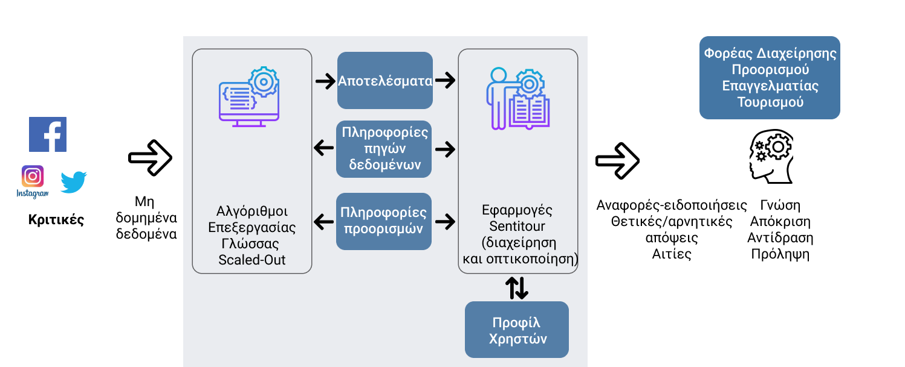

Περιγραφή

Ιδέα Οι απόψεις στο διαδίκτυο και στα κοινωνικά δίκτυα με τουριστικές εμπειρίες ποικίλλουν σε μορφή, εκφραστικότητα, συναίσθημα. Social Media, Traveler reviews, bloggers και δημοσιογράφοι σε πολλές διαφορετικές γλώσσες καταγράφουν κακές ή καλές ταξιδιωτικές εμπειρίες με απόψεις για επιχειρήσεις και προορισμούς.
-
Πόσο άμεσα και εύκολα ο επαγγελματίας του τουρισμού εντοπίζει την άποψη που τον αφορά ;
-
Οι φορείς διαχείρισης προορισμών επεξεργάζονται συστηματικά και έχουν επίγνωση της εικόνας που δημιουργείται από μια άποψη σε ένα online forum σε μία αγορά του εξωτερικού ;
-
Πως οι αυτόματοι μηχανισμοί εντοπισμού και ανάλυσης περιεχομένου μπορούν να εξάγουν γνώση από τα αμέτρητα κείμενα, διατηρώντας αξιοπιστία ως προς την ακρίβεια των αποτελεσμάτων και την απόδοση σε μεγάλα μεγέθη δεδομένων ;
Το Sentitour επιχειρεί να δώσει απαντήσεις και να δοκιμάσει λύσεις προς όφελος των επαγγελματιών του τουρισμού και των φορέων που διαχειρίζονται τουριστικούς πόρους. Συνδυάζοντας την προσαρμογή σύγχρονων τεχνολογιών Natural Language Processing, Νευρωνικών Δικτύων και συστημάτων κατανεμημένης επεξεργασίας με την γλωσσολογική ανάλυση θεματικά προσαρμοσμένη στον τουρισμό, Νeurolingo και Ίδρυμα Τεχνολογίας Έρευνας αναπτύσσουν, δοκιμάζουν και αξιολογούν πρωτότυπη εφαρμογή ανάλυσης απόψεων με αντικείμενο τον τουρισμό.
Κίνητρα & Ανάγκες Πολύ συχνά οι επισκέπτες σε έναν τουριστικό προορισμό καταγράφουν στα online/social media τις απόψεις και εμπειρίες τους. Άλλες φορές, οι χρήστες των μέσων αυτών εκφράζουν την πρόθεση ή επιθυμία να επισκεφθούν έναν τόπο για αναψυχή. Μπορεί να προτείνουν τεκμηριωμένα ένα προορισμό ή μία τουριστική δραστηριότητα. Άλλοτε πάλι εκφράζονται αρνητικά και αποτρεπτικά. Ο εντοπισμός και η ανάλυση των απόψεων αυτών προσφέρει πολύτιμη γνώση σε έναν φορέα διαχείρισης και προώθησης ενός τουριστικού προορισμού. Οι υπάρχοντες μηχανισμοί ανάλυσης συναισθημάτων σε συλλογές μη δομημένων δεδομένων δεν εξάγουν ακριβή γνώση. Χρησιμοποιούν στατιστική προσέγγιση. Δεν εξελίσσονται και δεν προσαρμόζονται εύκολα στις εκάστοτε θεματικές απαιτήσεις, σε έννοιες, γλώσσες και γεωγραφικά δεδομένα. Δεν ενσωματώνουν δυνατότητες γλωσσολογικής ανάλυσης με εξειδίκευση στον τουρισμό, ενώ ταυτόχρονα δεν μπορούν να επεξεργαστούν με κλιμακωσιμότητα (scalability) τους τεράστιους όγκους δεδομένων που προέρχονται από το διαδίκτυο.
Το έργο Προσαρμόζοντας σύγχρονες τεχνολογίες και αλγορίθμους στις ανάγκες του τουρισμού, το Sentitour εξελίσσει και προσαρμόζει τους αλγόριθμους ανάλυσης και επεξεργασίας φυσικής γλώσσας, ώστε να ανταποκρίνονται στις ανάγκες του τουρισμού με στόχο την ανάλυση και αιτιολόγηση των απόψεων. Στοχευμένη γλωσσολογική ανάλυση κειμένων και απόψεων θα εξασφαλίσει την επιθυμητή ανταπόκριση στις ανάγκες αυτές. Ενσωματώνει σύγχρονες μεθόδους μηχανικής εκμάθησης (deep learning) σε πλατφόρμα ανίχνευσης λέξεων και όρων, για την εφαρμογή τους στην αναγνώριση εννοιών με στόχο την ακριβέστερη ανάλυση απόψεων και αιτιών Επιδιώκει τη δυνατότητα επεξεργασίας μεγάλου όγκου τέτοιων δεδομένων. Η εκτέλεση των αλγορίθμων θα γίνει σε προηγμένους μηχανισμούς κλιμάκωσης επεξεργασίας (scale out) για όλες τις φάσεις της επεξεργασίας: μετασχηματισμό δεδομένων, εκπαίδευση και χρήση του υπολογιστικού μοντέλου. Η αρχιτεκτονική θα αξιοποιεί την κατανεμημένη μνήμη για τη φόρτωση των δεδομένων και θα εφαρμόζει πληθώρα τελεστών για την εξαγωγή των απαραίτητων γνωρισμάτων που χρησιμοποιεί το υπολογιστικό μοντέλο. Παραδίδει εφαρμογές αναφορών και ειδοποιήσεων οι οποίες θα οπτικοποιήσουν τα αποτελέσματα των αναλύσεων για να δείξουν την χρησιμότητας τους σε σενάρια χρήσης των επαγγελματιών του τουρισμού.
Πιλοτική Εφαρμογή Η εφαρμογή και αξιολόγηση του Sentitour σε επιλεγμένους προορισμούς θα επιτρέψει την αξιολόγηση της πλατφόρμας σε πραγματικά δεδομένα και συνθήκες, και ως προς τα τεχνολογικά κριτήρια απόδοσης και ως προς τα χρηστικά και λειτουργικά κριτήρια και την ακρίβεια των αναλύσεων.

-
Στόχοι
-
ΑΚΡΙΒΕΙΑ
Συστηματική ακτιβής και έγκαιρη ανάλυση απόψεων που γράφονται στα digital media σχετικά με προορισμούς και τουριστικές υπηρεσίες -
ΕΞΕΙΔΙΚΕΥΣΗ
Προσαρμογή αυτόματων μηχανισμών κατανόησης κειμένου με τεχνικές μηχανικής εκμάθησης εστιασμένες στον τουρισμό -
ΥΨΗΛΕΣ ΑΠΟΔΟΣΕΙΣ
Εξασφάλιση δυνατότητας κλιμάκωσης σε μεγάλους όγκους δεδομένων -
ΑΠΟΤΕΛΕΣΜΑΤΙΚΟΤΗΤΑ
Υποστήριξη επιχειρησιακών διαδικασιών marketing και διαχείρισης τουριστικών πόρων για τις ανάγκες των επαγγελματιών και των φορέων διαχείρισης
Νέα
-

Σεπτέμβριος 2019
Πρώτη έκδοση - προτότυπο
-

Ιούνιος 2019
Πειραματική αξιολόγηση μέσω αλγορίθμων Deep Learning
-

Δεκέμβριος 2018
Προσαρμογή των γλωσσικών πόρων
-

Ιούλιος 2018
Εκκίνηση έργου
Φορείς

Neurolingo
Η εταιρεία λεξικογραφικής ανάλυσης στην Ελλάδα
ΙΤΕ - Ινστιτούτο Πληροφορικής
Το κορυφαίο Eρευνητικό Ίδρυμα της χώρας
Επικοινωνία
Επιστημονικό & Τεχνολογικό Πάρκο Κρήτης
Νικολάου Πλαστήρα 100
Βασιλικά Βουτών 70013, Ηράκλειο Κρήτης
2810-391227
sentitour@neurolingo.gr